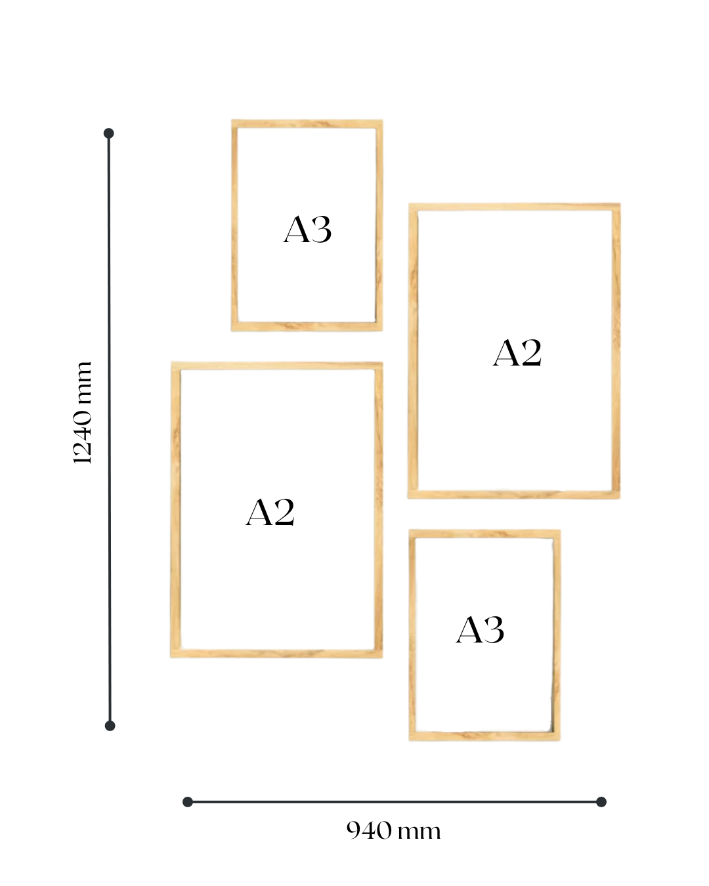
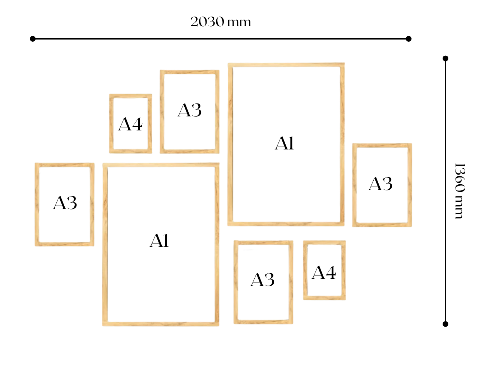

1 / 3

Akupanels
2 / 3

Akupanels
3 / 3

Akupanels
A modern, aesthetic wood slatted acoustic panel made from recycled plastics and solid wood. Enhance the your rooms sound and look.
Available in Oak or white Ash wood, and black felt.
We want to help protecting the environment. That is why our acoustic felt boards are made from recycled plastic and all the wood we use comes from sustainable suppliers. We want to make sure that the forest can reproduce more trees than what we use, so we also have joined the treevolution at Greenpop Foundation. For every items (i.e. unit) you purchase, we donate R50.


The 4-piece floating frame gallery includes 2 x A2 and 2 x A3 floating frames, with or without art.
Depending on your preferred spacing in between the frames you can expect a total layout of approximately 940 x 1240mm.

The 8-piece floating frame gallery includes 2 x A1, 4 x A3 and 2 x A4 floating frames, with or without art.
Depending on your preferred spacing in between the frames you can expect a total layout of approximately 2030 x 1360mm.
Please note that the frame galleries can be ordered with or without the art displayed, if you choose to select the frames-only option we will include everything you’ll need to insert your own art and hang up the frames.
The product is delivered in a cardboard box & paper mesh (an eco-friendly alternative to bubble wrap) to protect the condition & integrity of your product during transport & to minimize our carbon footprint.